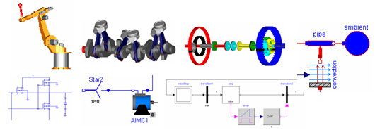

Package Modelica is a standardized and free package that is developed together with the Modelica language from the Modelica Association, see http://www.Modelica.org. It is also called Modelica Standard Library. It provides model components in many domains that are based on standardized interface definitions. Some typical examples are shown in the next figure:

For an introduction, have especially a look at:
Copyright © 1998-2006, Modelica Association.
This Modelica package is free software; it can be redistributed and/or modified under the terms of the Modelica license, see the license conditions and the accompanying disclaimer here.
| Name | Description |
|---|---|
| Users Guide | |
| Blocks | Library for basic input/output control blocks (continuous, discrete, logical, table blocks) |
| Mathematical constants and constants of nature (e.g., pi, eps, R, sigma) | |
| Electrical | Library for electrical models (analog, digital, machines, multi-phase) |
| Icons | Icon definitions |
| Mathematical functions (e.g., sin, cos) and operations on matrices (e.g., norm, solve, eig, exp) | |
| Mechanics | Library to model 1-dim. and 3-dim. mechanical systems (multi-body, rotational, translational) |
| Property models of media | |
| Type and unit definitions based on SI units according to ISO 31-1992 | |
| StateGraph | Library to model discrete event and reactive systems by hierarchical state machines |
| Library to model thermal systems (heat transfer, simple thermo-fluid pipe flow) | |
| Utility functions especially for scripting (operating on files, streams, strings, system) |